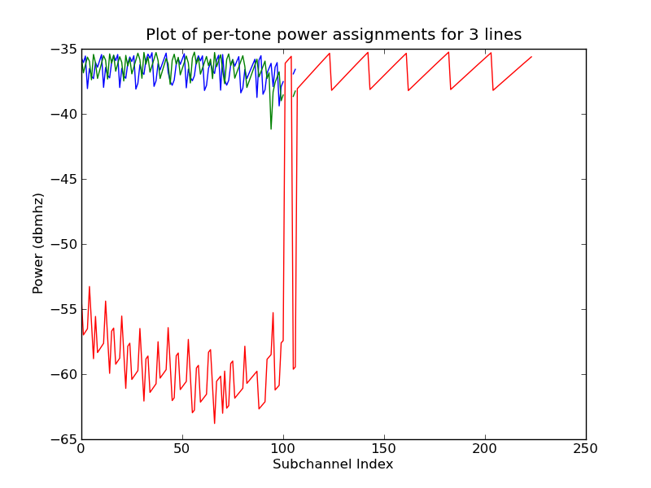
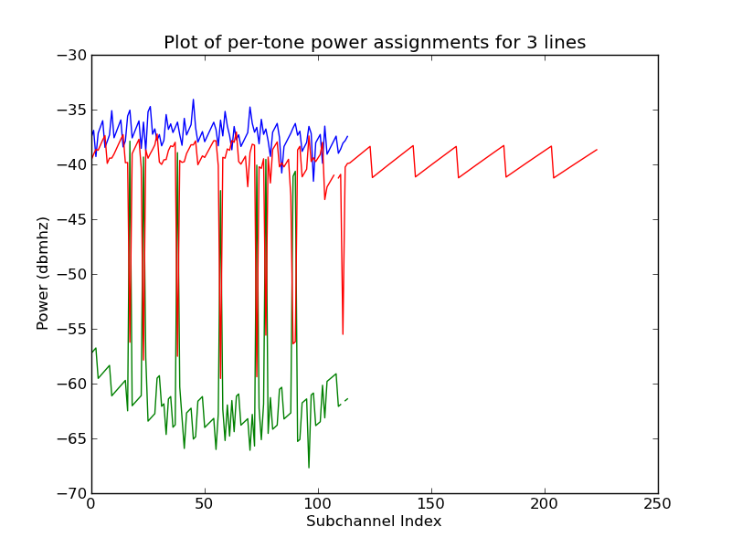
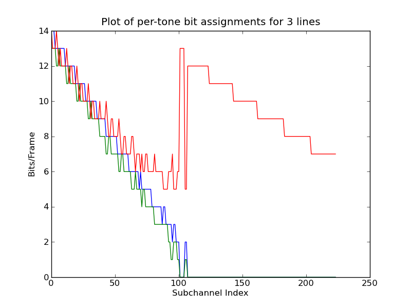
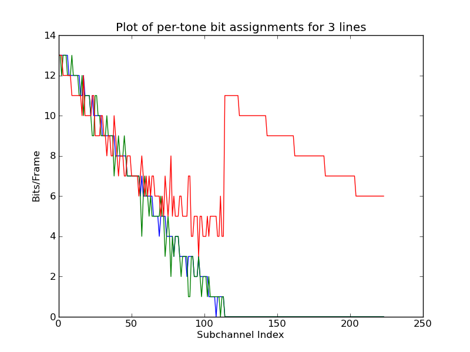

Again, the simplest way to verify operation is direct comparison to CPU bound implementations (Figure 42) In this case the graphs tell a very different story than that of OSB; as can be seen, the GPU implementation has power convergence problems between the green and red lines, but the bit-loads applied are nearly a perfect match. This is again due to numerical representation problems, where by the PSD/LK calculations produce vanishingly small differences between these two line segments, leading to oscillation of bit-load allocations across these lines. Again, the end result of this is a global bundle rate that is within 3% margin of error between CPU/GPU implementations.
Appendix 42:
Comparison of three line, near far scenario ISB: CPU/GPU
[ISB CPU Power Allocation]
[ISB GPU Power Allocation]
[ISB CPU Bit-load]
[ISB GPU Bit-load]